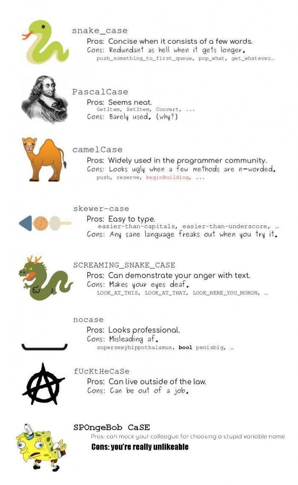

class: center, middle # Programmation procédurale : # bases <img height="200px" src="img/logo.png"> --- ## On parle de quoi ? 1. <a href="UAA11-ch1.html#3">Fonctions principales</a> 2. <a href="UAA11-ch1.html#4">Commentaires</a> 3. <a href="UAA11-ch1.html#5">Impression</a> 4. <a href="UAA11-ch1.html#6">Variable</a> 5. <a href="UAA11-ch1.html#15">Impression (suite)</a> 5. <a href="UAA11-ch1.html#17">Opérateurs</a> 6. <a href="UAA11-ch1.html#23">Lecture</a> 7. <a href="UAA11-ch1.html#24">Exercices de synthèse</a> --- # Fonction principale ``` ┌─── * Fonction principale │ instruction1 │ instruction2 │ instruction3 │ .... └────────── ``` ```c void main(void){ instruction1 instruction2 instruction3 } ``` → `main` est le **point d'entrée** du programme → `instruction1` est la première instruction (le programme commence) → `instruction3` est la dernière instruction (le programme termine) --- ## Commentaires ### Sur une seule ligne ```c // Déclaration et affectation en C int a; // déclaration d'une variable de type entière a = 3 // affectation ``` ### Sur plusieurs lignes ```c /* Programme calculant la moyenne d'une classe */ void main(void) ``` --- ## Impression L'impression sur l'écran se fait via la fonction `printf` ou `printf_s` ```c #include <stdio.h> void main(void){ printf("Bonjour !"); printf_s("Bonjour !"); } ``` → `stdio.h` est la librairie standard pour les entrées/sorties --- ## Variables Exercice : combien y a-t-il de variable ? ``` ┌─── * Calcul montant commande │ obtenir quantite │ montant = quantite * 2.5 │ sortir montant └────────── ``` --- ## Variables Une **variable** est une **zone mémoire** qui **stocke de l'information**. Une variable est **déclarée** en spécifiant : 1. son type 2. son nom 3. sa valeur (via une affectation) → la valeur peut être spécifiée en même temps que la déclaration ou après (mais pas avant !). --- ### Déclaration d'une variable : le nom Le nom d'une variable : * peut être constitué de lettres, chiffres et/ou _ * commence par une lettre ou _ * est "case sensitive" : distinction entre une minuscule et une majuscule Bonnes pratiques : * le nom d'une variable ne commence jamais par une majuscule * écriture en "camelCase" Exercices : quels sont les noms corrects/incorrects ? * `Chif Affaire` * `_ChifAffaire` * `1NbEtudiant` * `chifAffaire1` * `chifaffaire` --- ### Déclaration d'une variable : le nom  --- ### Déclaration d'une variable : le type En c, il existe 4 grands types, eux-même constitués de variants : ### Le type **entier** * `short in` ou `short` (2 octets) * `int` (4 octets) * `long int` ou `long` (4 octets) ### Le type **réel** * `float` (4 octets) * `double` (8 octets) * `long double` (16 octets) ### Le type **caractère** * `char` (1 octet) ### Le type **booléen** (dans `stdbool.h`) * `bool` (`true` / `false`) --- ### Déclaration d'une variable : le type ```c int nbEtudiants; // variable de type entier double pourcentageMoyen; // variable de type réel char finPhrase; // variable de type caractère bool estComplet; // variable de type booléen ``` --- ### Déclaration d'une variable : la valeur Lorsqu'on "donne" une valeur à une variable, on parle **d'affectation** ou **d'assignation**. Une affectation/assignation peut se faire : * en même temps que la déclaration ```c int nbEtudiants = 20; double pourcentageMoyen = 0.2; char finPhrase = 'c'; bool estComplet = false; ``` * dans la suite du programme ```c int nbEtudiants; double pourcentageMoyen; char finPhrase; bool estComplet; nbEtudiants = 20; pourcentageMoyen = 0.2; finPhrase = 'c'; estComplet = false; ``` --- ### Déclaration d'une constante Une **constante** est une variable dont sa **valeur ne peut pas changer** pendant toute l'exécution du programme. → on utilise le mot-clé `const` → toute affectation après la déclaration sera rejetée par le compilateur. ```c const int n = 20; // n contient la valeur 20 n = 10; // erreur ! ``` ```c const int n = 20; // n contient la valeur 20 const int n = 10; // erreur ! ``` --- ### Affectation Une affectation a toujours la forme `maVariable = monExpression` Une expression peut prendre plusieurs formes : * une valeur ```c int maVariable = 1; ``` * une opération ```c int maVariable = 10 + 15; ``` * une variable ```c int maVariable = 1; int monAutreVariable = 2; maVariable = monAutreVariable; maVariable = monAutreVariable + 5; ``` --- ## Impression (suite) ```c int nbInscrits = 100; printf("Nombre d'inscrits = %d", nbInscrits); ``` ```c double longueur = 5.5; printf("Perimetre du carré : %.2f m", 4 * longueur); ``` ```c int nbInscritsInfo = 100; int nbInscritsSciences = 150; printf("Nombre d'inscrits en info : %d\n", nbInscritsInfo); printf("Nombre d'inscrits en sciences : %d\n", nbInscritsSciences); ``` ```c int nbInscritsInfo = 100; int nbInscritsSciences = 150; printf("Nombre d'inscrits en info : %d\nNombre d'inscrits en sciences : %d\n", nbInscritsInfo, nbInscritsSciences); ``` --- ## Impression (suite) <style type="text/css"> .tg {border-collapse:collapse;border-spacing:0;float: left;margin: 10px;} .tg td{border-color:black;border-style:solid;border-width:1px;font-family:Arial, sans-serif;font-size:14px; overflow:hidden;padding:10px 5px;word-break:normal;} .tg th{border-color:black;border-style:solid;border-width:1px;font-family:Arial, sans-serif;font-size:14px; font-weight:normal;overflow:hidden;padding:10px 5px;word-break:normal;} .tg .tg-0pky{border-color:inherit;text-align:left;vertical-align:top} .tg .tg-dvpl{border-color:inherit;text-align:right;vertical-align:top} </style> <table class="tg"> <thead> <tr> <th class="tg-0pky">Type</th> <th class="tg-0pky">Code de formatage</th> </tr> </thead> <tbody> <tr> <td class="tg-0pky">`short`</td> <td class="tg-dvpl">%hd</td> </tr> <tr> <td class="tg-0pky">`int`</td> <td class="tg-dvpl">%d</td> </tr> <tr> <td class="tg-0pky">`long`</td> <td class="tg-dvpl">%ld</td> </tr> <tr> <td class="tg-0pky">`float`</td> <td class="tg-dvpl">%f</td> </tr> <tr> <td class="tg-0pky">`double`</td> <td class="tg-dvpl">%lf</td> </tr> <tr> <td class="tg-0pky">`long double`</td> <td class="tg-dvpl">%Lf</td> </tr> <tr> <td class="tg-0pky">`char`</td> <td class="tg-dvpl">%c</td> </tr> </tbody> </table> <table class="tg"> <thead> <tr> <th class="tg-0pky">Action</th> <th class="tg-0pky">Ordre de contrôle</th> </tr> </thead> <tbody> <tr> <td class="tg-0pky">passage à la ligne</td> <td class="tg-dvpl">\n</td> </tr> <tr> <td class="tg-0pky">tabulation</td> <td class="tg-dvpl">\t</td> </tr> <tr> <td class="tg-0pky">bip sonore</td> <td class="tg-dvpl">\a</td> </tr> </tbody> </table> <table class="tg"> <thead> <tr> <th class="tg-0pky">Affichage</th> <th class="tg-0pky">Pattern</th> </tr> </thead> <tbody> <tr> <td class="tg-0pky">\</td> <td class="tg-dvpl">\\\</td> </tr> <tr> <td class="tg-0pky">%</td> <td class="tg-dvpl">%%</td> </tr> <tr> <td class="tg-0pky">"</td> <td class="tg-dvpl">\"</td> </tr> </tbody> </table> --- ## Opérateurs ### Opérateurs arithmétiques * Addition : `+` ```c int maVariable; int monAutreVariable = 2; maVariable = monAutreVariable + 5; ``` * Soustraction : `-` ```c int maVariable = 1 - 2; ``` * Multiplication : `*` ```c int maVariable; int monAutreVariable = 2; maVariable = monAutreVariable * 2; ``` --- ### Opérateurs arithmétiques * Division : `/` ```c int maVariable; int monAutreVariable = 2; maVariable = monAutreVariable / 2; ``` * Modulo (reste de la division d'un entier par un entier) : `%` ```c int nombre = 15; int reste; reste = 15 % 2; // reste contient la valeur 1 reste = 15 % 3; // reste contient la valeur 0 reste = 15 % 4; // reste contient la valeur 3 ``` --- ### Type des variables en cas de division Quelle sera la sortie ? ```c int nb1, nb2, resultatDivisionEntiere; double resultatDivisionReelle; nb1 = 100; nb2 = 30; resultatDivisionReelle = nb1/nb2; printf("%lf",resultatDivisionReelle); ``` --- ### Type des variables en cas de division En C, l'opérateur de division appliqué à deux entiers, exécute la division entière : ```c double a = 1 / 3 // a contient 0 (partie entière de 0.33333...) ``` Pour "forcer" la division avec plus de précision, il faut utiliser le **casting** : ```c double a = (double) 1 / 3 // a contient 0.33333... ``` --- ### Incrémentation * Post-incrémentation ```c int n = 1; n++; ``` * Pré-incrémentation ```c int n = 1; ++n; ``` Quelle sera la sortie ? ```c int nombre = 10; int nombrePlusUn; ``` ```c nombrePlusUn = ++nombre; printf("nombre : %d\nnombrePlusUn :%d\n", nombre, nombrePlusUn); ``` ```c nombrePlusUn = nombre++; printf("nombre : %d\nnombrePlusUn :%d\n", nombre, nombrePlusUn); ``` --- ### Décrémentation * Post-décrémentation ```c int n = 1; n--; ``` * Pré-décrémentation ```c int n = 1; --n; ``` Quelle sera la sortie ? ```c int nombre = 10; int nombreMoinsUn; ``` ```c nombreMoinsUn = --nombre; printf("nombre : %d\nnombreMoinsUn :%d\n", nombre, nombreMoinsUn); ``` ```c nombreMoinsUn = nombre--; printf("nombre : %d\nnombreMoinsUn :%d\n", nombre, nombreMoinsUn); ``` --- ## Lecture La lecture se fait via le clavier en utilisant la fonction `scanf` ou `scanf_s` qui se trouvent dans la librairie `stdio.h`. ```c int nbEtudiants; scanf_s("%d", &nbEtudiants); ``` ```c int nbEtudiants; printf("Entrez le nombre d'inscrits : "); scanf_s("%d", &nbEtudiants); ``` ```c int abscisse, ordonnee; printf("Entrez les coordonnées (x,y) :"); scanf_s("(%d,%d)", &abscisse, &ordonnee); ``` → Ne pas oublier l'opérateur d'adressage `&` ! --- ## Exercices de synthèse Créez un programme qui demande à l'utilisateur d'entrer le nombre d'élèves inscrits dans la section informatique. Le programme affichera ensuite : "Il y a X inscrits en informatique". --- ## Exercices de synthèse Créez un programme qui demande à l'utilisateur d'entrer le nombre d'élèves inscrits dans la section informatique. Le programme affichera ensuite : "Il y a X inscrits en informatique". ```c #include <stdio.h> void main (void){ int nbEleves; printf("Nombre d'élèves en informatique : "); scanf("%d", &nbEleves); printf("Il y a %d inscrits en informatique",nbEleves); system("pause"); } ``` --- ## Exercices de synthèse Corrigez les erreurs du programme suivant. ``` Void main (double){ int nombre int nombredouble; printf("Nombre :); scanf("%lf", nombre); nombreDouble = 2 * Nombre; printf("Double du nombre :", nombreDouble); } ```